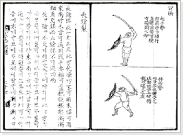

 |
우리나라 최초의 단병 무예서로 곤봉(棍棒) 등패(籐牌) 낭선(狼筅) 장창(長槍) 당파(鎲鈀) 장도(長刀)의 6기가 수록되어 있다.
임진왜란을 겪으며 압록강까지 피난 가는 수모를 겪었던 선조는 병법과 무예의 중요성을 절실히 느끼게 된다.
한양으로 환도 후 선조는 유성룡의 건의를 받아들여 1594년 훈련도감을 설치하고, 큰 돌 하나를 능히 들거나 1장(丈)의 담장을 뛰어넘을 수 있는 장정 수천 명을 선발하여 포수(砲手 : 총포병), 살수(殺手 : 창검병), 사수(射手 : 궁병) 등 |
|
삼수군(三手軍)으로 조련하게끔 한다.
특히 선조는 왜검술에 대항하기 위해 창검을 전문적으로 다루는 살수의 육성에 심혈을 기울인다. 이는 당시 조선의 장졸들이 가장 두려워했던 것은 조총이 아니라 일본의 왜검이었기 때문이다. |
|
|
|
이에 훈국랑(訓局郞=훈련도감의 낭관) 한교가 6기(六技)를 정리하여 『무예제보(武藝諸譜)』를 간행하고는 장졸들로 하여금 단병무예를 익히도록 하였다. 이들 무예는 12명이 하나의 대형을 이루어 싸우는 원앙진을 구성하는 기예가 주를 이룬다.
원앙진은 단병접전에서 놀라운 전투력을 발휘한 일본의 왜검술에 대항하기 위해 만들어진 것으로 왜적과의 수많은 전투에서 그 위력을 발휘하였다.
한교는 세조 때의 공신인 한명회의 5세손으로 일찍부터 율곡 이이와 우계 성혼에게서 학문을 배워 경학(經學)과 병략(兵略)에 조예가 깊었다. 난이 일어나자 의병을 일으켜 공을 세웠다. |
| |
| |
| |
| |